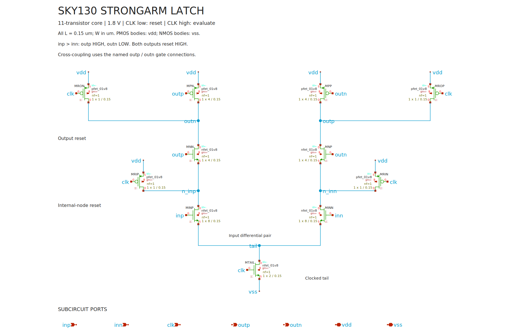

AGENT-IN-THE-SIMULATION · EXPERIMENT 01
What if the next input
was an AI decision?
A running circuit. A model that observes its outputs.
And a new experiment chosen at every pause.
THE QUESTION
Can a model find
a hidden offset?
A StrongArm latch compares two voltages each time its clock rises. We added a fixed +43 mV source to its positive input. The model was not told that value. It chose the external differential input, observed which output won, and decided what to try next.
GPT-6 Astra made every stimulus choice, including the first. Python validated and applied those choices. The model chose bisection, then spent its final trial checking whether a previous decision affected the result.
- Devices
- SKY130 · 11 transistors
- Corner
- TT · 27 °C
- Supply / common mode
- 1.8 V / 0.9 V external
- Clock / output load
- 50 MHz / 10 fF per output
See the latch schematic

The +43 mV series source is added outside this core, at its positive input. It raises the actual input-pair common mode by 21.5 mV.
THE RECORDED EXPERIMENT
Follow the model’s choices.
Select a stem or a decision number.
The waveforms and response stay in sync.
Measured waveforms
0–240 ns · entire run
AI-applied input offset
External differential stimulus, ΔV = VINPexternal − VINN
Original measured data: all 48,603 accepted samples are included. Charts preserve minima and maxima when reducing points for the display. This page explores a saved run; it makes no model calls.
WHAT HAPPENED
The model found the boundary.
Then it challenged the result.
After establishing opposite decisions, the model narrowed the external threshold to −43.359375 to −42.968750 mV—a 0.390625 mV interval containing the expected −43 mV cancellation point.
It used experiment 12 to repeat the upper endpoint after the opposite preceding decision. OUTP won again. The next model call chose to stop and stated what remained unmeasured.
Inspect the final recheckREPLAY, WITHOUT INFERENCE
Save the decisions.
Replay the experiment.
A second ngspice worker applied the recorded actions and reproduced every accepted timepoint, waveform value and returned observation in the same environment. It made zero model calls. Fresh AI runs may choose different experiments; action replay preserves what actually happened.
TRY IT YOURSELF
Bring your simulator.
Keep the experiment.
The repository includes configurable setup, the circuit, a recording, an AI controller, and replay checks. SKY130 model files and credentials stay in your own installation.
# Replay the recording · no model calls
./run.sh recorded
# Let an actual model choose each input
./run.sh ai --output runs/live-demo
# Replay that run without inference
./run.sh replay runs/live-demo/live \
--output runs/replay-again